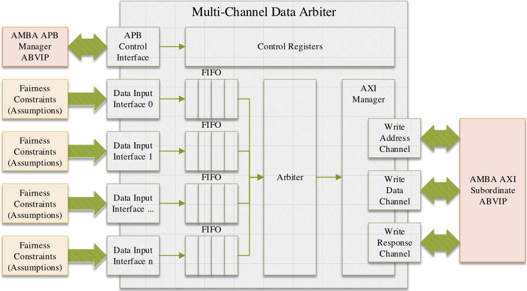
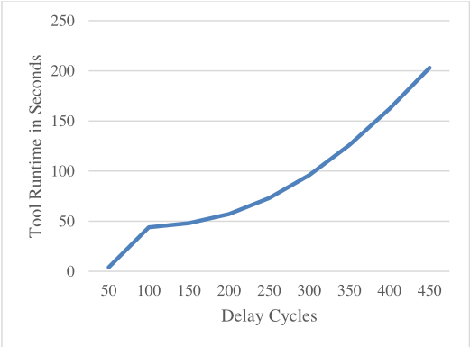
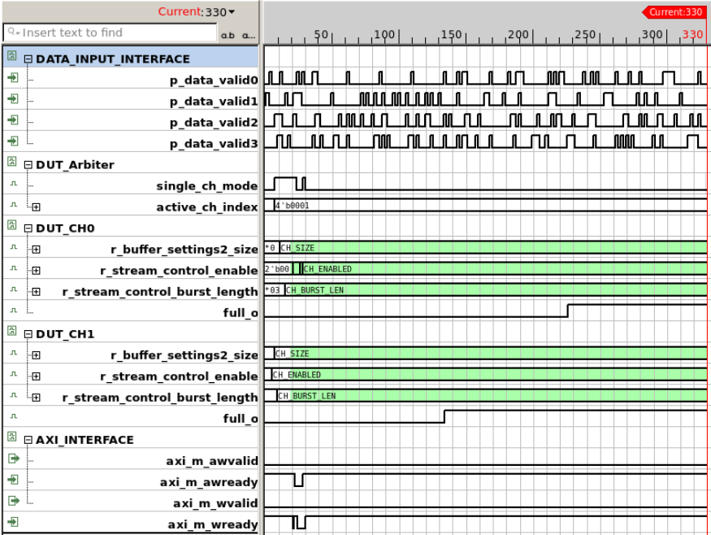

Unleash the Power of Formal for Post-Silicon Debugging
释放 Formal 在 Post-Silicon 调试中的威力
简介
NXP 面向逃逸出 UVM pre-silicon 验证、在硅上需 10-20 小时才复现的罕见 corner case deadlock，提出用 Formal Property Verification（FPV）加速 post-silicon 调试。方法遵循 UNEARTH 七步流程，不构造激励，而是用 SVA cover property 直接描述目标故障状态，配合 ABVIP 协议假设、fairness 约束与 'let' 辅助变量，由 Cadence Jasper FPV 借助全状态空间探索生成 formal trace。案例中多通道数据仲裁器的 deadlock 仅用一条 cover property 即在 73 秒内复现（硅上最长 20 小时），9 个 delay 变体首条 trace 4 秒、最长 203 秒；追加假设验证 workaround 后 formal 无法再生成 trace，证明修复有效。该 reactive FPV 方法对团队高速 IP 控制逻辑的功能 bug 复现与修复证明有借鉴价值，但不直接命中 DFT/ATPG/功能安全等核心能力域。
问题
Pre-silicon 验证团队在项目周期内难以完成全覆盖验证，罕见 corner case deadlock 等 functional bug 逃逸 UVM 仿真并在硅上暴露；post-silicon validation 团队发现异常后，传统做法是用 simulation based testbench 复现，但对需在硅上运行数小时才触发的 bug，约束随机化与大量 test run 的代价极高。论文要解决如何快速、结构化地复现 post-silicon 功能 bug，并支持修复后的缺席证明与 workaround 验证。
方法
采用 'reactive FPV' 思路：不实现激励，而是将观测到的故障行为实现为 SVA cover property（目标状态描述），由 formal 工具利用全可达状态空间探索生成 formal trace。流程遵循 UNEARTH 七步指南（各步可并行、需迭代）：收集故障信息、搭建 FPV testbench（DUT 例化并连接 APB/AXI ABVIP 提供协议假设）、编写 property（用 SystemVerilog 'let' 构造别名变量、跨层次直接引用内部配置寄存器、cover property 分配置匹配/寄存器稳定/使能后死锁三阶段，并用 generate 循环扫描不同 delay 周期）、调节环境假设（对输入数据端口加带上下界的 fairness 约束，防止 formal 仅因无输入数据而制造虚假 deadlock）、分析证明结果。工具为 Cadence Jasper FPV；同一环境可在设计修复后证明 bug 不存在或测试 workaround。
关键结果
硅上需 10-20 小时才随机出现的多通道仲裁器 deadlock，formal 工具仅用 73 秒即生成复现 trace（首个复现 deadlock 的 trace 起始于 250 delay cycles）
共生成 9 个不同 delay 周期的 property 变体；首条 cover trace 4 秒生成，最长 trace 203 秒
delay ≤200 cycles 时内部 FIFO 仍可缓冲数据（正常行为，非 deadlock）；250 cycles 起复现 deadlock
追加假设验证 workaround 后，formal 工具在 delay ≥250 cycles 时无法再生成任何 trace，证明 workaround 有效
trace 显示 channel 1 先激活、约 150 与 240 cycles 后两个 FIFO 满、AXI 接口无数据写出；据此通过 RTL review 定位到单通道模式优化在多通道启动时引入的 bug
创新点
相比传统用 simulation testbench 复现 post-silicon bug，改为用 cover property 描述目标故障状态、由 formal 全状态空间探索直接生成 trace（reactive FPV）；并强调 UNEARTH 七步流程对 formal 新手友好，只需 assumptions 与 cover properties 等子集技能即可上手；同一环境还可复用于修复后的 bug 缺席证明与 workaround 验证。
团队参考意义
相关度级别：medium
命中能力域：无明显对应
理由：论文核心是用 formal FPV 复现 post-silicon 功能 bug，不属于团队 7 个能力域（DFT/ATPG/门级验证、BSCAN、OCC/LBIST/CODEC、HBM4/UCie 测试、功能安全、fault simulation、CyberSec/自动化）的核心技术，故 matched_domains 为无明显对应；但团队开发与支持的 LPDDR/HBM4/UCie 等 IP 含大量仲裁、FIFO、握手与状态机控制逻辑，corner case deadlock/livelock 同样可能逃逸验证并在硅上暴露，UNEARTH 七步流程与单条 cover property 复现方法可直接借鉴；其证明修复后 bug 不存在的能力对 IP release 质量佐证也有潜在参考价值。
建议动作：作为方法参考存档
中文全文
Unleash the Power of Formal for Post-Silicon Debugging
Jan Hahlbeck，Shreya Upadhyay，德国汉堡
NXP Semiconductors Germany GmbH，（jan.hahlbeck@nxp.com，shreya.upadhyay@nxp.com）
摘要—本文展示了我们如何采用形式化属性验证（formal property verification）来加速流片后调试（post-silicon debugging）。通过使用覆盖属性（cover property）来复现缺陷（bug），而非采用传统的基于仿真的测试平台（testbench），我们充分利用了形式化工具的全状态空间探索能力。所采用的流程基于七个步骤，形式化验证的初学者和新用户同样可以应用该流程，因为搭建环境只需掌握其中一部分技能。对于许多缺陷而言，仅需一条覆盖属性便足以复现并调试它们。所搭建的环境还可用于在设计修复之后证明该缺陷已不存在，或对变通方案（workaround）进行测试。通过一个实例，我们展示了我们能够复现某款设计中一个难以发现的角落情况（corner case）死锁。该缺陷逃过了基于通用验证方法学（UVM）的流片前验证，最初由流片后验证团队观察到。在根据所提供的信息实现覆盖属性之后，形式化工具仅耗费几分钟的执行时间，便给出了所观察到的死锁的形式化轨迹（formal trace）。
关键词—形式化验证（Formal Verification）、形式化属性验证（Formal Property Verification）、流片后调试（Post-Silicon Debugging）
I. INTRODUCTION
作为面向汽车领域无线电与音频处理的现代片上系统（SoC）设计的供应商，我们一方面面临着日益增长的设计复杂度，另一方面面临着激进的上市时间表，同时还必须保持产品的高质量。流片前验证团队越来越频繁地无法在项目进度内完成全面充分的验证，此外他们还需要做出深思熟虑的决策来为其工作排定优先级。未被检测到的角落情况（corner case）设计死锁是设计与验证工程师的噩梦，因为它们会严重损害产品在客户端的可用性，并可能导致失去信任。为了在流片前验证阶段捕获这类缺陷，我们需要经验非常丰富的工程师和精确编写的测试规范，并结合精心选择的验证方法学。尽管如此，关键死锁仍有可能逃过流片前验证而依然存在于硅片中。为了在多次流片（multi-spin）项目中缓解这一风险，流片后验证被大量用于运行长期测试，这类测试在基于仿真的环境中无法以那样的规模执行。一旦流片后验证团队能够将设计带入某种意外状态，相应的测试用例就可以移交给流片前验证团队，由后者尝试在其环境中重现该问题。尽管形式化验证的威力早已为验证工程师所知，许多工程师仍然倾向于使用传统的基于仿真的测试平台（testbench）来重现缺陷。对于在硅片上运行数小时之后才出现的角落情况缺陷，可能需要在正确的约束随机化方面投入巨大精力，并执行大量的测试运行，才能最终遇到故障行为。通过使用形式化方法加速流片后问题的调试[1]，并作为我们通过提供混合验证环境来推动形式化验证成为方法学的举措[2]的一部分，我们开始使用形式化属性验证（FPV）来攻克流片后缺陷，其方式即使对初学者也适用，因为大部分工作依赖于假设和覆盖属性，而非复杂的断言。在一个示例中，我们展示了我们能够在我们的一个设计中捕获一个罕见的角落情况死锁，该死锁在硅片上需要长达20小时才会出现。仅通过使用单个覆盖属性，我们就在短短73秒内揭示了这个缺陷。搭建形式化测试平台所需的唯一额外工作是添加基于断言的验证IP（ABVIP）和一些易于实现的公平性假设。所有假设和覆盖属性均通过使用 System Verilog Assertions（SVA）来实现。我们使用 Cadence Jasper FPV 作为形式化 FPV 工具[3]。
1
II. FORMAL BASED POST SILICON DEBUGGING FLOW
将形式化属性验证（FPV）用于流片后调试被称为“反应式 FPV”（reactive FPV）[4]，它利用了能够探索被测设计（DUT）所有可达状态之完整空间的能力。无需实现激励，而是可以描述目标状态。形式化工具能够生成关于如何到达该状态的证据，即形式化轨迹（formal trace）。该方法的主要工作量在于：结合所有已报告的边界约束，将观察到的故障行为实现为 SVA 序列。我们复现缺陷的过程遵循"UNEARTH"指南[5]，该指南由七个阶段组成：
这七个步骤并非严格按顺序执行，其中一些步骤可以并行进行，或者可能需要来回反复。与常规 FPV 流程一样，需要经过多次迭代才能把一切调整到位。该流程可用于任何类型的功能缺陷，例如调试死锁（deadlock）、活锁（livelock）或任何其他类型的意外设计行为。
III. SHOWCASING THE APPROACH
在接下来的章节中，我们将展示如何应用流片后缺陷猎取（bug hunting）流程来复现并调试一个逃过流片前验证的罕见边界情况死锁。如上一节所述，UNEARTH 方法的各个步骤并不强制按顺序执行，例如，我们倾向于在实现属性之前先搭建 FPV 验证平台，以便让所有层次化路径提前就位。
在一个信号处理 SoC 的流片后验证阶段，验证团队报告称，他们的一项测试在硅片上运行 10 至 20 小时后会随机失败。在相应的测试用例中，他们对一个多通道数据仲裁器进行穷尽式测试，该仲裁器是某个更大信号处理模块的一部分。该测试用例从仲裁器中随机选择两个通道，并使用随机化的设置对其进行配置。配置完成后，会使能相应的输入数据处理，以确保仲裁器通道有输入数据。仲裁器将数据收集到一个 FIFO 中，并通过 AXI manager 将其写入目标存储器地址。对于每个 IP 配置，最终在目标存储器地址处都应出现一些输出数据。在上述测试用例中，被测设计（DUT）突然停止发送数据。所提供的约束如下：
2

B. Environment Build for FPV
在收集完有关该非预期行为的所有信息之后，第二步是搭建 FPV 测试平台。多通道仲裁器被实例化为 DUT，所有输入和输出均正确连接。该仲裁器具有用于访问内部寄存器的 APB 控制接口、多个自定义数据输入接口，以及用于将数据写入存储器的 AXI 接口。图 1 展示了该 DUT，其 APB 接口和 AXI 接口连接了 ABVIP，并且在输入数据端口上添加了额外的公平性（fairness）约束，以确保输入数据流的连续性。如果不添加公平性约束，形式化工具可能仅通过不发送任何输入数据就制造出死锁。ABVIP 会添加假设，以保证 APB 和 AXI 接口上的行为符合协议。

C. Nailing down the property
基于硅后验证（post-silicon validation）的发现，即可实现相应的 SystemVerilog 断言（SVA）cover property。为了使这些 SVA 属性具备最大的可读性，我们利用 SystemVerilog 的 'let' 构造来创建别名变量，以避免属性冗长且难以阅读。图 2 展示了为仲裁器的一个通道所实现的辅助代码。该代码同样会被复制到其他通道。这些配置寄存器可以通过指向 DUT 内部的交叉引用直接访问，因为我们并不关心这些寄存器是如何被配置的，只想确保形式化轨迹中的内部值正确。每个通道还实现了两个额外的变量，用于确保预期的配置，并检查这些配置是否保持稳定。
3

// Helpers to access internal DUT signals let ch0_mode = DUT.<path_to_mode_control_register>; let ch0_packet_size = DUT.<path_to_size_control_register>; let ch0_axi_burst_len = DUT.<path_to_burst_len_control_register>; let ch0_axi_target_addr = DUT.<path_to_target_addr_control_register>; // Validation settings parameter CH_PACKET_SIZE = 24'd300; parameter CH_AXI_BURST_LEN = 8'h03; parameter CH_AXI_TARGET_ADDR_0 = 32'hAFFE_0000; // Arbiter Mode per Channel (Enabled / Disabled / Debug Mode) parameter CH_DEBUG = 2'b10; parameter CH_ENABLED = 2'b01; parameter CH_DISABLED = 2'b00; // Helper to ensure validation settings let ch0_cfg_matches = (ch0_packet_size == CH_PACKET_SIZE) && (ch0_axi_burst_len == CH_AXI_BURST_LEN) && (ch0_axi_target_addr == CH_AXI_TARGET_ADDR_0); // Helpers to ensure stable settings (mode excluded intendedly) let ch0_control_regs_stable = $stable(ch0_packet_size) && $stable(ch0_axi_burst_len) && $stable(ch0_axi_target_addr);
基于准备好的辅助代码，我们实现了如图 3 所示的 cover property。在七个可用通道中，我们仅选择激活前两个通道。该属性被划分为三个阶段，以根据硅后验证的发现确保配置正确，并最终进入死锁状态：
4
parameter MAX_DELAY = 500; // 最初从 100 开始 generate for (genvar DELAY=50; DELAY < MAX_DELAY; DELAY=DELAY+50) begin show_me_the_deadlock : cover property ( @(posedge axi_clk) disable iff (!axi_rst_an) // 阶段 1：在通道被禁用时，配置必须匹配一次。 // 当通道被使能时，寄存器设置被采样。 ( ch0_mode == CH_DISABLED && ch0_cfg_matches && ch1_mode == CH_DISABLED && ch1_cfg_matches ) ##1 // 阶段 2：控制寄存器必须保持稳定，我们不关心其他会发生什么 ( ch0_control_regs_stable && ch1_control_regs_stable ) [*1:$] ##1 // 阶段 3：七个通道中有两个被使能，配置保持稳定。 // AXI 上没有流量，从设备（subordinate）已就绪。 ( ch0_mode == CH_ENABLED && ch0_control_regs_stable && ch1_mode == CH_ENABLED && ch1_control_regs_stable && ch2_mode == CH_DISABLED && ch3_mode == CH_DISABLED && ch4_mode == CH_DISABLED && ch5_mode == CH_DISABLED && ch6_mode == CH_DISABLED && !axi_m_awvalid && !axi_m_wvalid && axi_m_awready && axi_m_wready ) [*DELAY] ); end endgenerate
D. Regulate the environment assumptions
为确保自定义数据接口上输入数据的连续性，图 4 展示了针对通道 0 所实现的公平性假设。这些约束被复制应用于其余六个通道。这些假设的设计方式使得数据速率可以由形式验证工具动态选择，但始终保持在下界与上界之间。下界保证死锁不会因输入数据缺失而产生，上界则保证不会违反该 IP 的规范。
parameter SHIFT_REG_SIZE = 12; parameter MIN_VALID_CNT = 1; // 最小数据速率：12 个周期中有 1 个周期有效 parameter MAX_VALID_CNT = 4; // 最大数据速率：12 个周期中有 4 个周期有效 bit [SHIFT_REG_SIZE-1:0] valid_0_reg; always @(posedge sample_clk) begin // 通道 0 valid_0_reg[0] <= DUT.p_data_valid0; valid_0_reg[SHIFT_REG_SIZE-1:1] <= valid_0_reg[SHIFT_REG_SIZE-2:0]; end
5
assume_data_valid_0 : assume property ( @(posedge sample_clk) $countones(valid_0_reg) >= MIN_VALID_CNT && $countones(valid_0_reg) <= MAX_VALID_CNT );
E. Proof Results
表1展示了所有已生成的属性变体及其对应的运行时间。总共生成了该属性的九个具有不同延迟周期数的变体。形式化工具生成第一条覆盖轨迹需要4秒，生成最长轨迹需要203秒。在延迟计数达到200个周期之前，内部FIFO仍能够缓冲数据，这是一种有效行为，并不反映死锁。第一条复现死锁的轨迹从250个延迟周期开始，工具运行时间为73秒。图6展示了死锁的一个示例轨迹。可以观察到，通道1首先被激活，若干周期之后，第二个通道0才被激活。在大约150个周期和大约240个周期后，两个FIFO均已满，且没有数据再通过AXI接口写入。一次深入的RTL审查使我们注意到了最近为单通道模式引入的一项仲裁器优化。设计工程师未曾预料到，该优化在多通道启动期间同样会生效。形式化工具精确命中了一个关键周期：在该周期，第二个通道的使能会破坏仲裁器逻辑。幸运的是，可以采用控制流中的一种变通方法来避免这一极端情况。该变通方法在附加假设下进行了测试，此后形式化工具再也无法生成延迟周期达到250或更多的轨迹。
| Generated Property # | Delay in Cycles | Proof Runtime in Seconds | Deadlock found |
|---|---|---|---|
| 1 | 50 | 4 | No (Internal FIFOs still able to buffer) |
| 2 | 100 | 44 | No (Internal FIFOs still able to buffer) |
| 3 | 150 | 48 | No (Internal FIFOs still able to buffer) |
| 4 | 200 | 57 | No (Internal FIFOs still able to buffer) |
| 5 | 250 | 73 | Yes |
| 6 | 300 | 96 | Yes |
| 7 | 350 | 126 | Yes |
| 8 | 400 | 162 | Yes |
| 9 | 450 | 203 | Yes |
| Generated Property # | Delay in Cycles | Proof Runtime in Seconds | Deadlock found |

I. LIMITATIONS
UNEARTH 方法使用 FPV（形式化属性验证）来重现流片后缺陷，这要求对覆盖属性的形式化轨迹是如何推导得出的有充分的理解。由于每一个——额外的——周期都可能急剧增加生成轨迹所需的运行时间，因此必须透彻理解如何描述通往故障行为的最短路径。图 5 展示了在延迟周期线性增加的情况下，生成形式化轨迹的工具运行时间呈非线性增长。
6

II. SUMMARY
在本文中，我们证明了 FPV 非常适合用于分析和调试流片后问题。通过遵循 UNEARTH 方法的七个步骤，可以以结构化的方式重现缺陷。我们成功捕获了一个逃过流片前验证的、发生在多通道数据仲裁器中的罕见极端用例死锁。仅需一条覆盖属性便足以生成该死锁的形式化轨迹。形式化工具仅用 73 秒便重现了该死锁。基于该轨迹，我们定位出了存在缺陷的 RTL，并成功测试了一种变通方案，以避免该死锁出现在最终硅片中。这有力地展示了形式化方法在重现、分析和修复死锁以及其他类型功能性缺陷方面的强大能力。